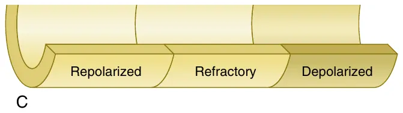
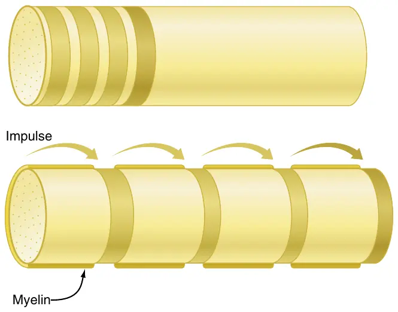

نسخه استخراجشده؛ ترجمه یا تأیید علمی انجام نشده است. وضعیت: captured
دستیاری برای بلاک عصب آلوئولار تحتانی (IANB)، بلاک اصلی دندانهای فک پایین، فقط چند قطره، حدود ۰٫۳ میلیلیتر، دقیقاً کنار عصب تزریق کرده؛ با این فکر که «جای درست از حجم مهمتر است». بیست دقیقه بعد بیحسی ناقص است. چرا چند قطرهی درستجا کافی نبود؟

ایمپالس از جایی که شروع شده خودبهخود جلو میرود. بخش دپلاریزهشده جریانهای موضعی میسازد که چند میلیمتر در طول غشا پخش میشوند و بخش مجاور را کمتر منفی میکنند. وقتی آن بخش ۱۵ میلیولت کمتر منفی شد، خودش شلیک میکند و چرخه ادامه مییابد؛ مثل فتیلهای که هر تکهی سوزانش تکهی بعدی را آتش میزند. انرژی از خود غشا در طول مسیر میآید، پس ایمپالس در راه ضعیف نمیشود.
بخشی که تازه شلیک کرده در دورهی تحریکناپذیری است؛ برای همین ایمپالس فقط رو به جلو میرود و به عقب برنمیگردد.
در فیبر بیمیلین جریان موضعی در فاصلهی کوتاهی افت میکند و فقط بخش کاملاً مجاور را به آستانه میرساند؛ پس ایمپالس آهسته و پیوسته جلو میخزد. سرعت هدایت در فیبرهای C حدود ۱٫۲ متر بر ثانیه است، در برابر تا ۱۲۰ متر بر ثانیه در فیبرهای میلیندار A.
در فیبر میلیندار، میلین مثل عایق بار درون و بیرون را از هم دور میکند؛ جریان موضعی دورتر میرود و ایمپالس از یک گره رانویه به گره بعدی میجهد. این هدایت جهشی (saltatory) بسیار سریعتر و کممصرفتر از هدایت پیوسته است. هرچه آکسون ضخیمتر، میلین ضخیمتر و فاصلهی گرهها بیشتر، و هدایت سریعتر.

برای بلاک مطمئن، دستکم دو تا سه گره پشت سر هم باید بلاک شوند؛ یعنی حدود ۸ تا ۱۰ میلیمتر از عصب باید در محلول باشد.
نکتهی طلایی: بلاک کامل هم حجم کافی میخواهد و هم غلظت کافی. چند قطرهی درستجا طول کوتاهی از عصب را میپوشاند و ایمپالس از روی آن میجهد؛ برای همین در IANB حجم ۱٫۵ میلیلیتر را کم نکن.